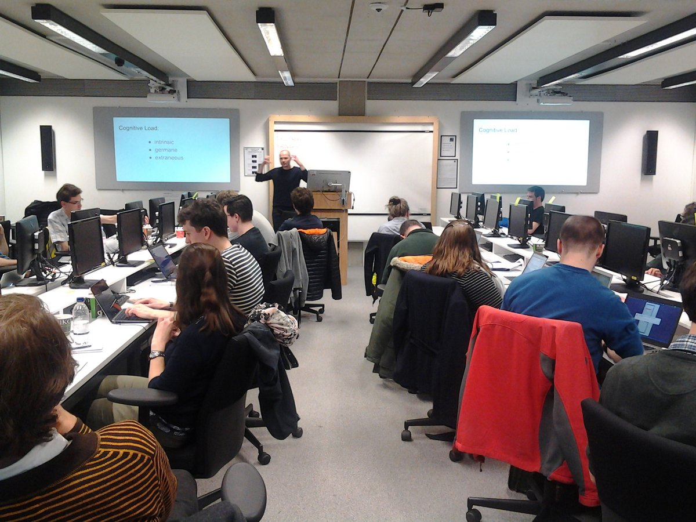

Software Carpentry and Data Carpentry at the University of Sheffield!
The University of Sheffield is now a Software Carpentry Partner Organisation, allowing the Research Software Engineering and Library teams to start organising Software Carpentry and Data Carpentry workshops. These are designed to help researchers develop the programming, automation and data management skills needed to support their research. Workshop dates are to be announced shortly.
Edit:
Our first Software Carpentry workshop is scheduled for 16th and 17th August!

Addressing the training needs of researchers with regards to programming
As more researchers realise they can produce better quality research more quickly if they have some coding and data management skills under their belts universities will need to ensure that training in these areas is accessible to those that need it.
Academic institutions will most likely already have courses for teaching highly-specialist subjects (such as how to use the local HPC cluster) but for the more generic aspects of research software development and data management there are several obvious choices:
- Develop and deliver bespoke materials;
- Buy in to commercial training packages;
- Point researchers towards free online resources;
However, there is also a fourth option: team up with the Software Carpentry (SC) and Data Carpentry (DC) not-for-profit organisations to deliver on-site, interative workshops based on open-source materials that have been refined by a large community of SC and DC instructors.
Software whatywhaty?
Software Carpentry has developed discipline-agnostic workshop material on:
- programming with Python, R or MATLAB;
- using databases and SQL;
- the UNIX shell;
- version control with git or mercurial;
- automation using Make.
Data Carpentry lessons look at data management and processing within the context of a specific domain (such as ecology or genomics), focussing on areas such as:
- the command line;
- data cleaning and filtering using OpenRefine;
- data processing and visualisation with Python or R;
- cloud computing
- GIS
What form do the workshops take?
The Software and Data Carpentry organisations ask that accredited instructors delivering 'branded' workshops adopt a fairly progressive teaching style:
- Workshops typically last two days and include four lessons (e.g. the unix shell, Python, version control and databases).
- There's lots of live coding: the instructor and students gather together in a room with laptops and a projector and all present go through a number of examples interactively. Students use their own laptops to ensure that they're able to continue where they left off at the end of a workshop. Instructors can and do make mistakes when doing live coding; students can then learn from these mistakes and may grow in confidence on learning that pros make mistakes too.
- Instructors try to elicit responses from students and use quizes to gauge comprehension and keep students focussed.
- Software Carpentry has a code of conduct and tries to ensure that all lessons delivered under its banner are as inclusive as possible.
What's happening at the University?
The University is now a Software Carpentry Partner Organisation so can run many workshops per year using the Software Carpentry and Data Carpentry branding. We could run workshops without the branding but Software and Data Carpentry are now familiar names to researchers (and potentially employers) and by working closely with those two organisations we become part of a global network of instructors with which we can share ideas and materials.
The RSE team and Library collectively now have five accredited Software and Data Carpentry instructors: Mike Croucher received training some time ago and in March Tania Allard and I from the RSE team plus Jez Cope and Beth Hellen from the Library's Research Services Unit participated in instructor training in Oxford.

The four of us spent two days learning about the SC/DC teaching style, what makes for an effective instructor and got to practise several aspects of workshop development and delivery. I must thank the instructors on the training course (Mateuz Kuzak and Steve Crouch) plus Reproducible Research Oxford for hosting and organising the event.
We are now planning our first Software Carpentry and Data Carpentry workshops. These are to be held later in the summer.
Keep an eye on this blog, the RSE-group@sheffield.ac.uk mailing list and @RSE_Sheffield for dates!